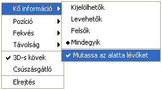
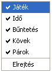
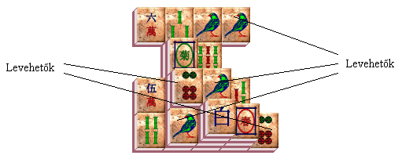
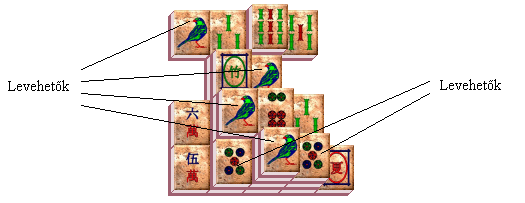

|
- 1. Hogyan tudom
beállítani a kőpaletta tulajdonságait?
- 2. Hogyan
tudom meghatározni, hogy az állapotsorban mely információk
jelenjenek meg?
- 3. Ráklikkeltem egy szabad kőre, de
nem jelölődött ki?
- 4. Több
levehető párt tudok összeszámolni, mint amennyi az állapotsorban
olvasható?
- 5. Szeretném
megkeverni a köveket, de a keverés opció nem
aktív?
- 6. Egy adott
számú leosztással (pl.:#01) játszom, de elrendezés vagy szabály
váltásakor egy teljesen új leosztást (#00) kapok?
- 7. Feliratkoztam az eredménytáblára,
de hibásan adtam meg a nevem. Hogyan tudom
kijavítani?
- 8. Véletlenül kitöröltem az összes rekordot az
eredménytábláról. Hogyan tudom visszaállítani?
- 9. Véletlenül kitöröltem az elmentett játékállásokat.
Hogyan tudom visszaállítani?
- 10. Milyen új tulajdonságok jellemzik majd az
Ant-Mahjongg következő verzióját?
|
1. Hogyan tudom beállítani a
kőpaletta tulajdonságait?
Ha a paletta el van rejtve, akkor
válasszuk a Nézet menü Kőpaletta opcióját! Ezután a palettán való
jobb egérkattintással hívható elő annak helyi menüje. Itt van
lehetőségünk beállítani azokat a tulajdonságokat, melyek a kövek
megjelenésével és a paletta elhelyezkedésével kapcsolatosak. A
részletes beállításokkal kapcsolatban lásd program használati
útmutatóját!

Kőpaletta menüje
|
2. Hogyan tudom meghatározni, hogy az állapotsorban
mely információk jelenjenek meg?
Ellenőrizzük, hogy a Nézet menü
Állapotsor opciója be legyen jelölve! Az állapotsoron történő jobb
egérkattintás után, annak helyi menüjében választható ki, hogy az
információk közül melyeket jelenítse meg.

Állapotsor menüje
|
3. Ráklikkeltem egy szabad kőre,
de nem jelölődött ki?
A kövek kijelölése szabályonként
eltérő, ezért ellenőrizzük, hogy melyik szabályrendszerben játszunk
(Fájl menü / Szabály)!
|
4. Több levehető párt tudok
összeszámolni, mint amennyi az állapotsorban olvasható?
Ha egyszerre három vagy négy
összeillő kő található, akkor azokat többféle párosításban is le
lehet venni. Három ugyanolyan kő háromféleképpen, míg négy összeillő
kő hatféleképpen vehető le. Az állapotsorban a Párok mező azonban
azt mutatja, hogy hány pár távolítható el a tábláról, ezért két vagy
három kő esetében egy, míg négy azonos kőnél kettő a levehető párok
száma!
-

-
-
Két
levehető pár
-
-
-

-
-
Három levehető pár
|
5. Szeretném megkeverni a köveket,
de a keverés opció nem aktív?
A játék vége felé ? kevés számú kő
esetében ? előfordulhat olyan állapot, amikor további keverésre már
nincs lehetőség. A program ugyanis nem csupán véletlenszerűen keveri
meg a köveket, hanem páronként újra felépíti a megmaradt alakzatot.
Az alábbi játékállásnál látszik, hogy képtelenség úgy újraépíteni a
köveket, hogy a leszedhetőség biztosított legyen. Ilyen esetekben a
Csere funkció még segíthet egy-egy pár levételében, de előfordul,
hogy a játék nem fejezhető be, hiszen két egymáson lévő követ
lehetetlenség egyszerre levenni. Ha módunkban áll, sokat segíthet
ilyenkor visszavonni az utolsó néhány lépést, és újra átgondolni a
levételi sorrendet.
-
-
-
-
-
Keverés nem lehetséges
|
6. Egy adott számú leosztással (pl:#01)
játszom, de elrendezés vagy szabály váltásakor egy teljesen új leosztást
(#00) kapok?
Új játék kérése, elrendezés vagy
szabály váltása mindig egy teljesen új leosztást eredményez. Ha egy
adott leosztással szeretnénk játszani, akkor azt mindig az
elrendezés, illetve szabály kiválasztása után adjuk meg! Amennyiben
ugyanazzal az előre meghatározott játékkal szeretnék többször egymás
után játszani, akkor válasszuk az Újrakezdés
funkciót!
|
7. Feliratkoztam az eredménytáblára, de
hibásan adtam meg a nevem. Hogyan tudom kijavítani?
Az Új rekord dialógusablakban
hibásan elmentett név módosítására a későbbiekben már nincs
lehetőség!
|
8. Vétetlenül kitöröltem az összes
rekordot az eredménytábláról. Hogyan tudom visszaállítani?
Az Eredmények dialógusban a
rekordok törlésénél a program minden esetben megerősítést kér. Ha
egyszer engedélyeztük a törlést, akkor a rekordok visszaállítására
többé nincs lehetőségünk!
|
9.
Véletlenül kitöröltem az elmentett játékállásokat.
Hogyan tudom visszaállítani?
Az elmentett játékállások a
Megnyitás, és a Mentés dialógusablakban is törölhetők. A törlés
előtt azonban a program minden esetben megerősítést kér. Ha egyszer
engedélyeztük a törlést, akkor a mentett játékok visszaállítására
többé nincs lehetőségünk!
|
10.
Milyen új tulajdonságok jellemzik majd az Ant-Mahjongg következő
verzióját?
-
A továbbfejlesztés a
program kényelmesebb kezelésére-, a beállítások adta
lehetőségek kiterjesztésére-, és a többnyelvűség
támogatására fog kiterjedni.
Íme néhány a
távoli tervekből:
-
Elrendezések kiválasztása egy dialógusablakból,
ahol megjelenik az alakzatok kicsinyített
mása.
-
Stílus-, mintázat-, és térhatás
beállítása ugyanabban a dialógusablakban, ahol egy kövön
követhetjük nyomon a változtatásokat.
-
Többféle animáció készítése a játék
felfüggesztése esetére.
-
Hátterek, textúrák, színsémák
bővítése.
-
Választási lehetőség 800 * 600-as és1024 *
768-as képernyőméret között.
-
Nyelv kiválasztásának lehetősége: Magyar /
Angol.
-
Saját elrendezések
létrehozása. | |